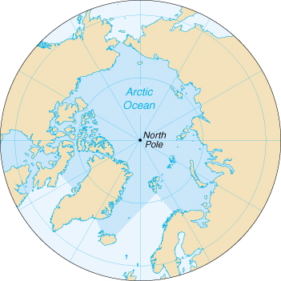

| Arctic Ocean |
|
|  | |
| Introduction |
Background: A spring 2000 decision by the International Hydrographic Organization delimited a fifth world ocean from the southern portions of the Atlantic Ocean, Indian Ocean, and Pacific Ocean. The new ocean extends from the coast of Antarctica north to 60 degrees south latitude which coincides with the Antarctic Treaty Limit. The Arctic Ocean remains the smallest of the world's five oceans (after the Pacific Ocean, Atlantic Ocean, Indian Ocean, and Southern Ocean).
| Geography |
Location: body of water mostly north of the Arctic Circle
Geographic coordinates: 90 00 N, 0 00 E
Map references: Arctic Region
Area:
total:
14.056 million sq km
note:
includes Baffin Bay, Barents Sea, Beaufort Sea, Chukchi Sea, East Siberian Sea, Greenland Sea, Hudson Bay, Hudson Strait, Kara Sea, Laptev Sea, Northwest Passage, and other tributary water bodies
Area - comparative: slightly less than 1.5 times the size of the US
Coastline: 45,389 km
Climate: polar climate characterized by persistent cold and relatively narrow annual temperature ranges; winters characterized by continuous darkness, cold and stable weather conditions, and clear skies; summers characterized by continuous daylight, damp and foggy weather, and weak cyclones with rain or snow
Terrain: central surface covered by a perennial drifting polar icepack that averages about 3 meters in thickness, although pressure ridges may be three times that size; clockwise drift pattern in the Beaufort Gyral Stream, but nearly straight-line movement from the New Siberian Islands (Russia) to Denmark Strait (between Greenland and Iceland); the icepack is surrounded by open seas during the summer, but more than doubles in size during the winter and extends to the encircling landmasses; the ocean floor is about 50% continental shelf (highest percentage of any ocean) with the remainder a central basin interrupted by three submarine ridges (Alpha Cordillera, Nansen Cordillera, and Lomonosov Ridge)
Elevation extremes:
lowest point:
Fram Basin -4,665 m
highest point:
sea level 0 m
Natural resources: sand and gravel aggregates, placer deposits, polymetallic nodules, oil and gas fields, fish, marine mammals (seals and whales)
Natural hazards: ice islands occasionally break away from northern Ellesmere Island; icebergs calved from glaciers in western Greenland and extreme northeastern Canada; permafrost in islands; virtually ice locked from October to June; ships subject to superstructure icing from October to May
Environment - current issues: endangered marine species include walruses and whales; fragile ecosystem slow to change and slow to recover from disruptions or damage; thinning polar icepack
Geography - note: major chokepoint is the southern Chukchi Sea (northern access to the Pacific Ocean via the Bering Strait); strategic location between North America and Russia; shortest marine link between the extremes of eastern and western Russia; floating research stations operated by the US and Russia; maximum snow cover in March or April about 20 to 50 centimeters over the frozen ocean; snow cover lasts about 10 months
| Government |
Data code: none; the US Government has not approved a standard for hydrographic codes - see the Cross-Reference List of Hydrographic Data Codes appendix
| Economy |
Economy - overview: Economic activity is limited to the exploitation of natural resources, including petroleum, natural gas, fish, and seals.
| Transportation |
Ports and harbors: Churchill (Canada), Murmansk (Russia), Prudhoe Bay (US)
Transportation - note: sparse network of air, ocean, river, and land routes; the Northwest Passage (North America) and Northern Sea Route (Eurasia) are important seasonal waterways
| Transnational Issues |
Disputes - international: some maritime disputes (see littoral states); Svalbard is the focus of a maritime boundary dispute between Norway and Russia